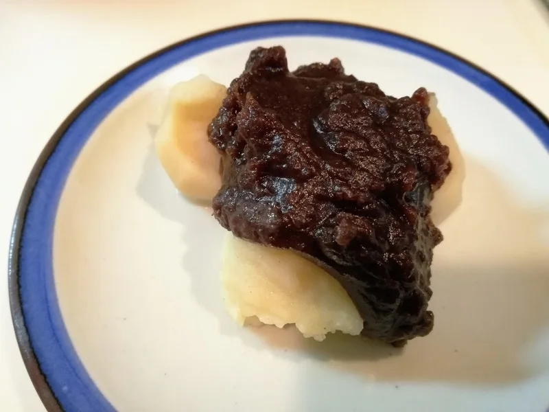
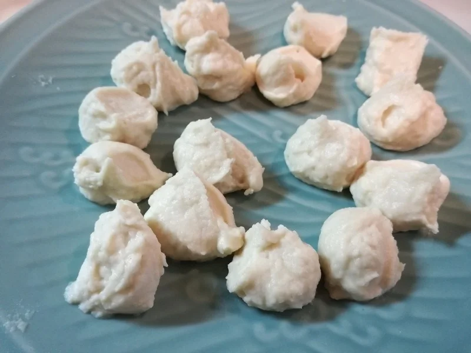

パンケーキ・おやつ
おからパウダーのミニパンケーキ
小さく焼いて楽しむ、おからパウダーのミニパンケーキです。私はこの生地を、ジャムやバターと合わせたり、あんこを挟んだりする食べ方も紹介してきま


ラップは製品の使い方に従い、密閉しないでください。団子がまだ固まっていなければ、短く追加加熱します。火が通ってから、加熱済みのあんをのせましょう。
自作のあんこは、団子にのせるほか、おしるこにも使えます。煮詰めるほど固さが変わるので、使い道を考えて仕上げましょう。元記事では、再加熱でさらに煮詰まることを考えて、ゆるめにしています。
甘味料を替える場合は、エリスリトール240gに対して砂糖200gです。この量は、ほかのお菓子の置き換え量と混同しないでください。
甘くした分だけ食べる量を増やさないでください。団子とあんこは、皿に取り分けて楽しみましょう。
加熱時間は作った時の目安です。容器や調理器具によって仕上がりは変わります。中心まで火が通っていることを確認してください。
電子レンジで作るおからあん団子の材料・作り方（50kgdiet.com） →
このページは書籍の改訂原稿をもとに掲載しています。元記事は過去の記録のため、材料や表現が異なる場合があります。